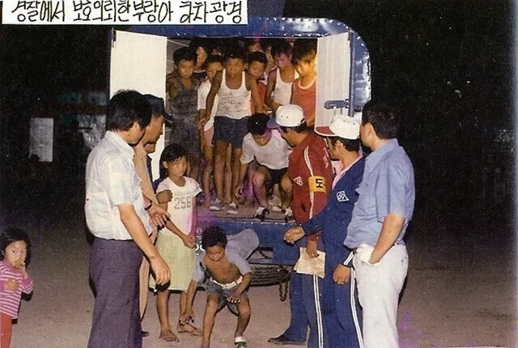

historia real detrás de la desigualdad que inspiró El Juego del Calamar
Un caso real que muestra cómo la explotación y la desigualdad pueden superar incluso a la
ficción.

Introducción
En 2021 millones de personas quedaron impactadas al ver la serie
El juego del calamar.
Una historia donde personas desesperadas participan en juegos crueles
mientras millonarios observan desde las sombras.
Pero décadas antes de que esa serie existiera, en Corea del Sur ocurrió
un caso real que mostró cómo la desesperación, el poder y la desigualdad
pueden crear sistemas profundamente injustos.
Ese lugar fue conocido como Brothers Home.
El inicio de un sistema oscuro
Durante las décadas de 1970 y 1980 Corea del Sur atravesaba
un periodo de transformación económica.
Las autoridades buscaban mostrar una imagen de orden y progreso.
Para lograrlo, muchas personas consideradas “indeseables”
fueron retiradas de las calles.
Entre ellas había personas sin hogar, huérfanos,
personas con discapacidad y trabajadores pobres.
Muchas de estas personas fueron detenidas sin haber cometido delitos
y enviadas a centros de detención llamados
“instituciones de bienestar”.
Uno de los más grandes fue Brothers Home,
ubicado en la ciudad de Busan.
Lo que ocurría dentro
Oficialmente Brothers Home era presentado como un centro de ayuda social.
Sin embargo, testimonios de sobrevivientes describen
una realidad completamente diferente.
Miles de personas vivían en condiciones difíciles
y eran obligadas a realizar trabajos forzados.
Durante años el lugar funcionó prácticamente sin supervisión
ni control público.
Miles de víctimas
Investigaciones posteriores revelaron que más de
38.000 personas pasaron por Brothers Home.
Entre ellas había niños, adolescentes y adultos
que simplemente fueron detenidos en las calles.
El caso finalmente salió a la luz pública en
1987,
generando uno de los mayores escándalos sociales
en la historia moderna de Corea del Sur.
La inquietante conexión con El Juego del Calamar
Aunque la serie de Netflix no está basada directamente
en Brothers Home,
ambas historias muestran una realidad inquietante:
personas vulnerables atrapadas en sistemas injustos.
En El juego del calamar los participantes
son personas endeudadas que aceptan competir
en juegos crueles para sobrevivir.
En Brothers Home miles de personas fueron encerradas
sin poder escapar de un sistema que controlaba
cada aspecto de sus vidas.
Ambas historias nos obligan a enfrentar una pregunta incómoda:
¿Qué ocurre cuando la sociedad deja de ver
a algunas personas como seres humanos?
Un recordatorio incómodo
Hoy Brothers Home sigue siendo recordado
como un episodio oscuro en la historia
de Corea del Sur.
Aunque muchas personas nunca escucharon
hablar de este caso,
su historia demuestra que la explotación
de los más vulnerables no es solo un tema
de ficción.
A veces la realidad puede ser más perturbadora
que cualquier serie o película.